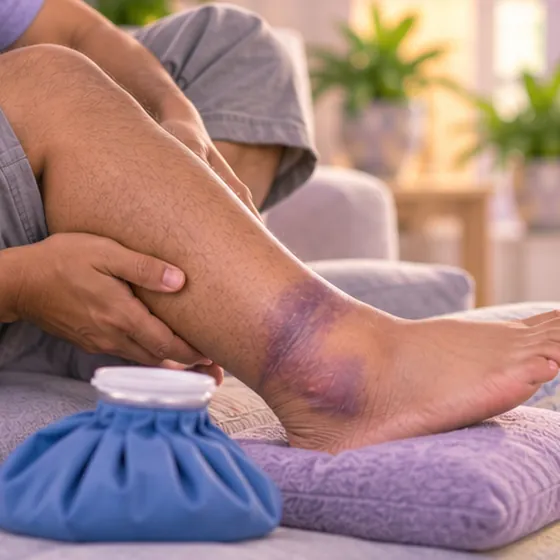
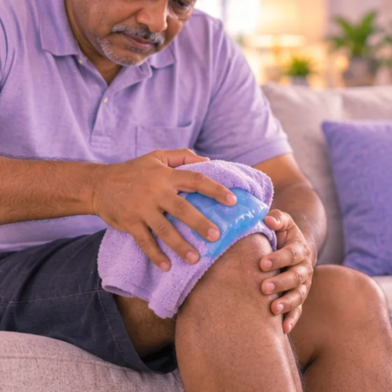

Tendon Achilles terputus
Tali kuat di belakang buku lali koyak atau putus
Apa itu
Tendon Achilles menghubungkan otot betis dengan tulang tumit dan membolehkan anda menolak kaki semasa berjalan atau berlari. Apabila koyak, selalunya ada bunyi 'pop' tiba-tiba dan sakit di belakang buku lali.
- Belakang buku lali, betis bawah
- Sukan, tolakan mendadak
- Bunyi 'pop', lemah menolak
- Jumpa doktor
- Jabatan kecemasan; doktor ortopedik atau doktor sukan
- Biasa pada
- Orang dewasa pertengahan umur yang bersukan sekali-sekala; juga warga emas
- Berjangkit
- Tidak
- Perjalanan
- Perlukan pelan doktor, dengan but, simen atau pembedahan; pemulihan biasanya mengambil masa beberapa bulan
Tanda biasa

Bengkak dan lebamBengkak dengan ekimosis
Tanda-tanda lain
- Bunyi 'pop' tiba-tiba atau rasa seperti ditendang di belakang buku lali
- Sakit tajam dan bengkak di belakang buku lali atau betis bawah
- Tidak boleh berjingkat atau menolak semasa berjalan
- Ruang atau lekuk yang boleh dirasa di atas tumit
Mengapa ia berlaku
- Tolakan atau lompatan mendadak, seperti ketika bermain badminton, bola sepak atau berlari
- Tersandung, jatuh atau terpijak lubang secara tiba-tiba
- Tendon yang lemah kerana usia, terlalu banyak digunakan atau sakit di belakang tumit sebelum ini
- Sesetengah ubat boleh melemahkan tendon; tanya doktor atau ahli farmasi
Jumpa doktor dahulu jika
- Bunyi 'pop' tiba-tiba dengan sakit dan anda tidak boleh menolak atau berjingkat: jumpa doktor segera
- Kaki sejuk, pucat, biru atau kebas: ke hospital segera
- Betis bengkak, merah dan sakit, atau tiba-tiba sesak nafas atau sakit dada: hubungi 999
- Luka terbuka di belakang buku lali, atau kemerahan dan demam selepas pembedahan
- Sakit di belakang tumit yang kerap berulang, mungkin satu amaran
Jika mana-mana berkenaan, sila jumpa doktor sebelum sesi.
Halaman ini ialah maklumat am. Sila terus mengambil ubat biasa anda dan terus berjumpa doktor.
Teruskan mengambil ubat biasa anda dan terus berjumpa doktor. Sesi kami ialah sokongan lembut dan tidak menggantikan rawatan perubatan.
Menjaga diri

Tuam sejuk pada tempat sakitTerapi sejuk
Lebih banyak cara menjaga diri
- Berhenti beraktiviti, berehat, dan elakkan berjalan dengan kaki itu sehingga diperiksa
- Ikut pelan doktor tentang but, simen, tongkat dan senaman
- Panaskan badan dengan baik dan tingkatkan sukan secara perlahan apabila dibenarkan kembali
Beritahu ahli terapi anda
- Kulit luka, merah atau sakit
- Darah beku atau kaki bengkak yang baru
- Ubat pencair darah
- Diabetes atau deria kulit berkurang
- Perentak jantung atau implan logam
- Kaki lemah
Ahli terapi anda akan menyemaknya bersama anda sebelum bermula.
Soalan dan jawapan
Apakah Tendon Achilles terputus?
Tali kuat di belakang buku lali koyak atau putus. Tendon Achilles menghubungkan otot betis dengan tulang tumit dan membolehkan anda menolak kaki semasa berjalan atau berlari. Apabila koyak, selalunya ada bunyi 'pop' tiba-tiba dan sakit di belakang buku lali.
Apakah tanda biasa Tendon Achilles terputus?
Bengkak dan lebam
Mengapa Tendon Achilles terputus berlaku?
Tolakan atau lompatan mendadak, seperti ketika bermain badminton, bola sepak atau berlari · Tersandung, jatuh atau terpijak lubang secara tiba-tiba · Tendon yang lemah kerana usia, terlalu banyak digunakan atau sakit di belakang tumit sebelum ini · Sesetengah ubat boleh melemahkan tendon; tanya doktor atau ahli farmasi
Bagaimana menjaga diri dengan Tendon Achilles terputus?
Tuam sejuk pada tempat sakit
Bolehkah sesi AI Body Master membantu Tendon Achilles terputus?
Sesi ialah sokongan meridian tanpa jarum yang lembut untuk kesejahteraan anda. Ia tidak merawat atau menyembuhkan Tendon Achilles terputus dan tidak menggantikan ubat atau doktor anda. Beritahu ahli terapi anda sebelum sesi bermula.
Keadaan berkaitan
- Patah tulang tumit
- Patah buku lali tiga sisi (trimaleolar)
- Kecederaan ligamen deltoid (bahagian dalam buku lali)
- Patah jari kaki
- Patah buku lali
- Terseliuh buku lali
- Dislokasi buku lali
- Patah tulang kaki (metatarsal)
- Meniskus haus (lutut)
- Sista meniskus (lutut)
- Kaki rata
- Kecederaan saraf brakial (saraf bahu dan lengan)
Rujukan: General information based on public health sources such as Mayo Clinic, NHS, Cleveland Clinic and NCBI StatPearls.
Halaman dikemas kini: 2026-11-04